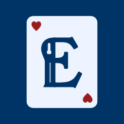

Icon test
- On the iPhone, in Safari: tap a row, then Share → Add to Home Screen → Add. Do all five.
- Long-press the Home Screen → Edit → Customise → Dark.
- Note which keep the blue background. If 1 is not blue or 2 is not black, the test doesn’t hold — say so.
- Delete the five test icons. They hold no data; your Poker Hub icon is not touched.

Cardcontrol — should stay blue2Heartcontrol — should go black3